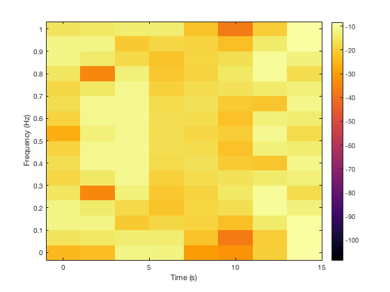
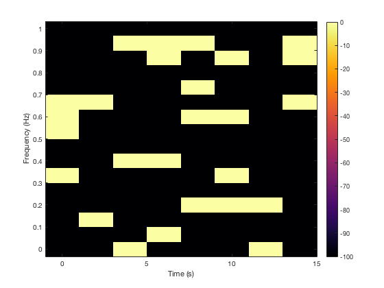
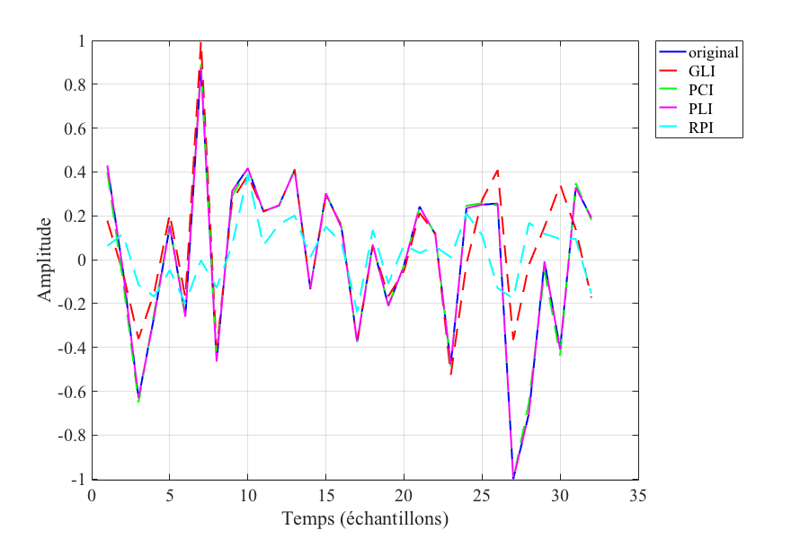

Contents
clc; clear; close all
Example of the solution of the problem phase inpainting in small dimension
sig_len = 32;
fs = 2;
flim1 = [0, 20];
flim2 = [20, 15];
snr = 2;
signal_params= generate_signal_parameters(sig_len, fs,flim1,...
flim2, snr);
x_ref = generate_chirp_dirac_noise(sig_len,signal_params);
fprintf("The signal length is :%.f\n\n",sig_len)
The signal length is :32
Generate the parameters of the Gabor transform and the operators
win_type='hann';
approx_win_len = 8;
hop = approx_win_len/2;
nbins = approx_win_len*2;
dgt_params = generate_stft_parameters(win_type, approx_win_len, hop,...
nbins, sig_len);
[dgt, idgt,pseudoinv] = get_stft_operators(dgt_params, sig_len);
fprintf("The DGT parameters are :\n -win_type : %s\n -hop : %.f\n -nbins: %.f\n", win_type, hop, nbins)
x_tf = dgt(x_ref);
figure;
plot_spectrogram(x_tf, dgt_params, signal_params, dgt);
The DGT parameters are :
-win_type : hann
-hop : 4
-nbins: 16

Generation and display of the binary mask
missing_ratio = 0.8;
width=1;
fprintf("The ratio of missing phases is %.f %% \n",missing_ratio*100)
fprintf("The width of the hidden areas is %.f \n",width)
[b, mask] = generate_random_missing_phases(x_tf, missing_ratio, width);
figure;
plot_spectrogram(mask, dgt_params, signal_params, dgt);
The ratio of missing phases is 80 %
The width of the hidden areas is 1

Implementation of our algorithms
verbose_it=1000;
n_iter = 2000;
tracker_gli = GLTracker(x_ref, idgt);
t0= cputime;
x_gli= griffin_lim_inpainting(mask,b, dgt, idgt, ...
n_iter,verbose_it,tracker_gli);
runtime_gli = cputime - t0;
fprintf("The calculation time by GLI is %f s\n",runtime_gli)
n_iter_pci = 5000;
nu = 1e-14;
vec = @(x) x(:);
nb_atoms_gabor = numel(x_tf);
A = zeros(nb_atoms_gabor,sig_len);
I = eye(sig_len);
for ii=1:sig_len
A(:,ii) =vec(dgt(I(ii,:)));
end
G = A*pinv(A,1e-10);
tracker_pci = PhasecutTracker(x_ref,b, idgt);
t0 = cputime;
x_pci = phasecut_inpainting(mask,b,G,idgt, n_iter_pci,nu, verbose_it, tracker_pci);
runtime_pci = cputime-t0;
fprintf("The calculation time by PCI is : %f s\n",runtime_gli)
epsilon =1e-16;
obs = observations(b, mask);
tracker_pli = PhaseLiftTracker(x_ref);
t0= cputime;
[X_pli_cvx,x_pli_cvx] = phaselift_inpainting_cvx(A, mask, obs, epsilon, tracker_pli);
runtime_pli = cputime - t0;
fprintf("The calculation time by PLI is : %f s\n",runtime_pli)
The calculation time by GLI is 6.280000 s
Iteration 1000
Iteration 2000
Iteration 3000
Iteration 4000
Iteration 5000
The calculation time by PCI is : 6.280000 s
The calculation time by PLI is : 4.330000 s
RPI
x_rpi = random_phase_inpainting(mask,b,idgt);
x_pci_f = fix_global_phase(x_ref, x_pci);
x_pli_f = fix_global_phase(x_ref, x_pli_cvx);
figure('Position',[10 10 900 600]); plot(x_ref,'b','LineWidth',2);
hold on;
plot(real(x_gli),'r--','LineWidth',2);
plot(real(x_pci_f),'g--','LineWidth',2);
plot(real(x_pli_f),'m--','LineWidth',2);
plot(real(x_rpi),'c--','LineWidth',2);
grid()
legend('original','GLI','PCI','PLI','RPI','Location','northeastoutside')
xlabel("Temps (échantillons)");
ylabel('Amplitude')
set(gca, 'FontSize', 20, 'fontName','Times');

The respective reconstruction errors are
disp("les erreurs de recontruction en dB sont :")
err_gli = compute_error(x_ref, x_gli);
err_pci = compute_error(x_ref, x_pci);
err_pli = compute_error(x_ref, x_pli_cvx);
fprintf("GLI :%f\n",err_gli)
fprintf("PCI :%f\n",err_pci)
fprintf("PLI :%f\n",err_pli)
les erreurs de recontruction en dB sont :
GLI :-1.531629
PCI :-23.426509
PLI :-158.451392